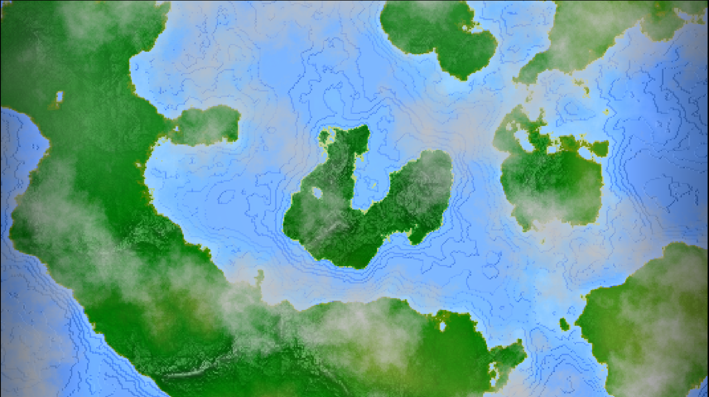
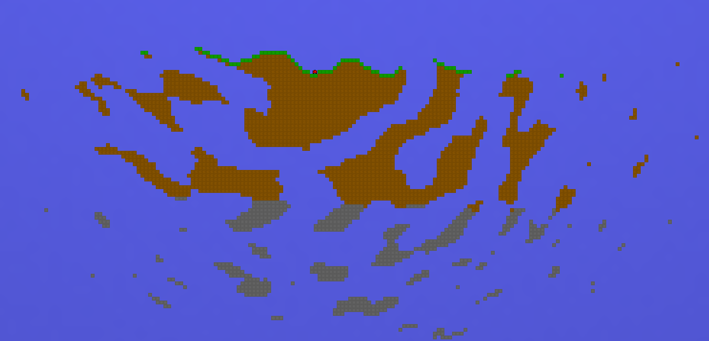
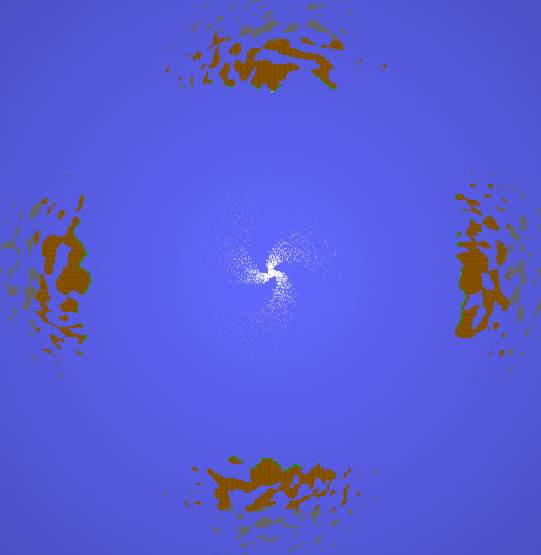
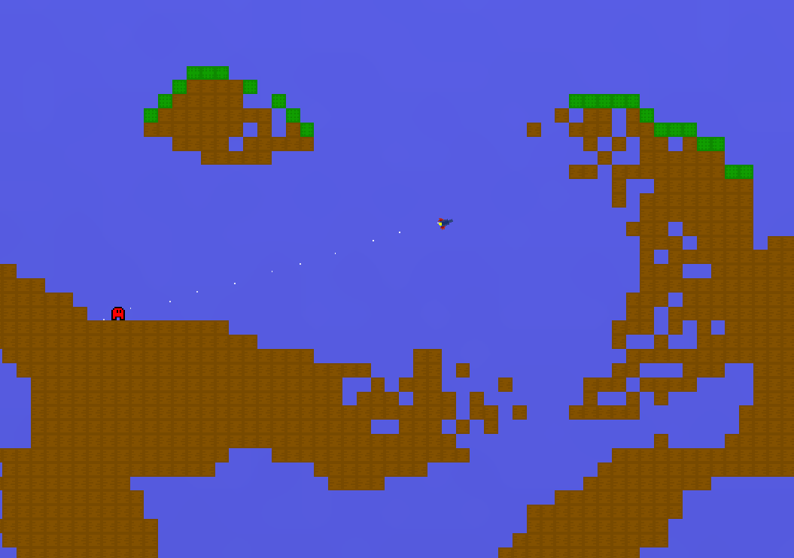
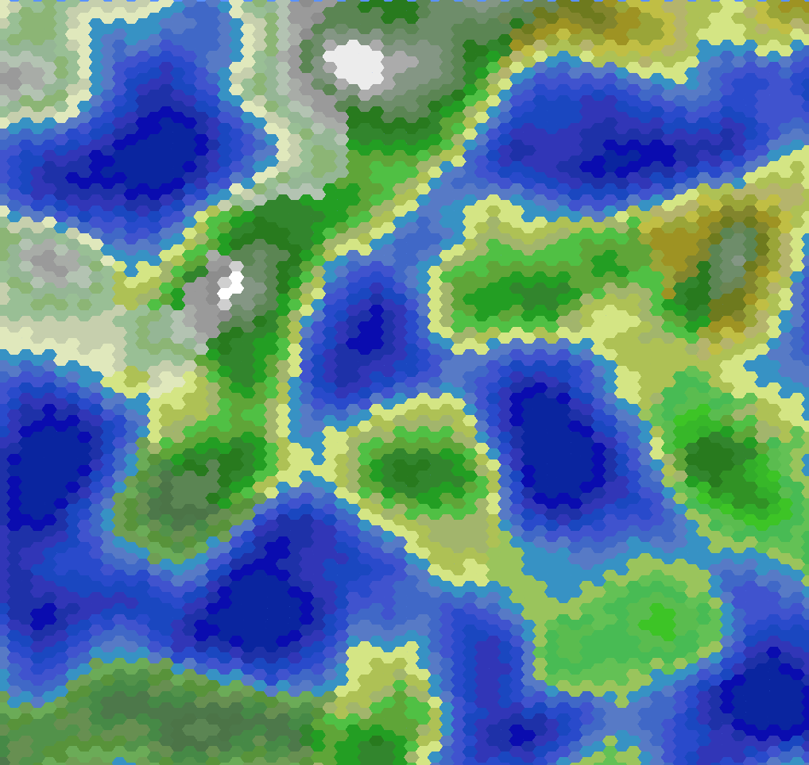
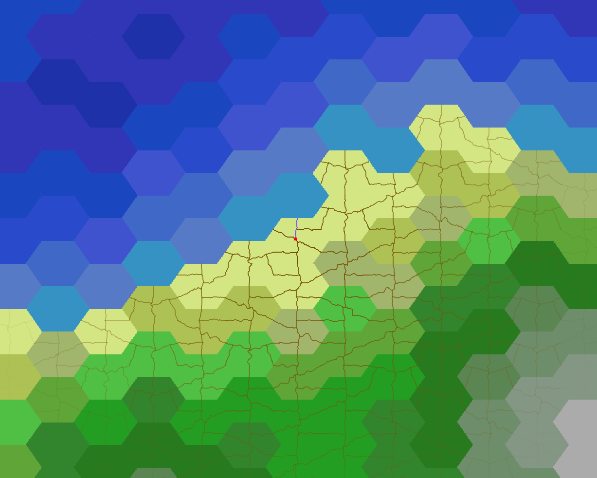
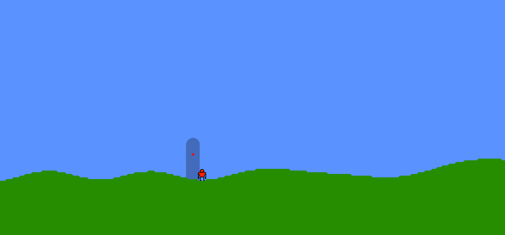
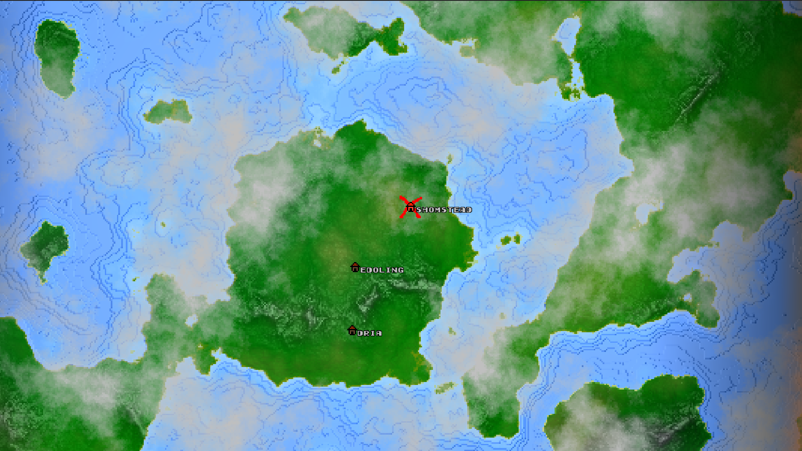
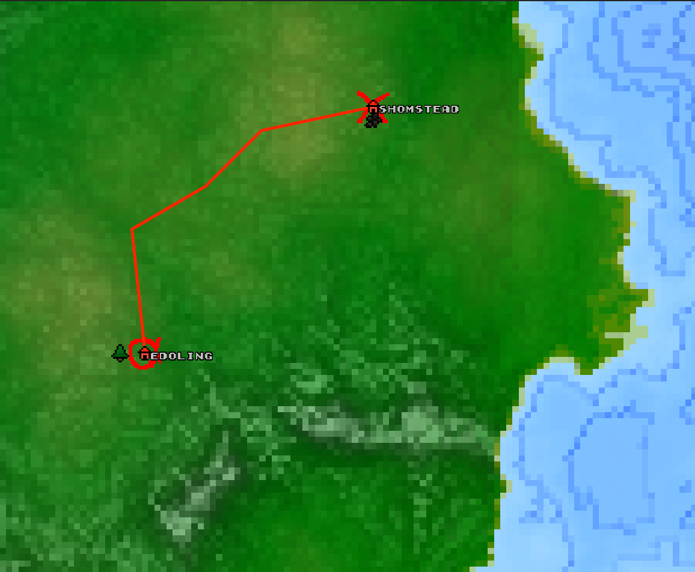
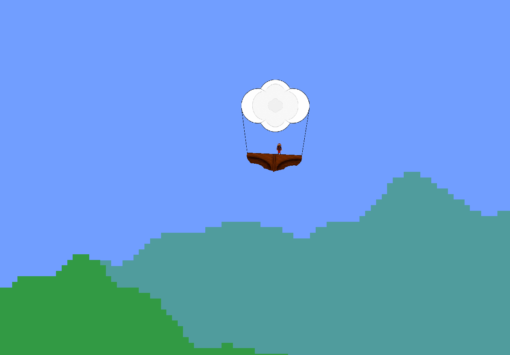

2D NOISE GENERATION
With these projects, I taught myself how to utilize some basic 2d noise to generate levels and maps.

Oposilation
Here, the idea was to create a PVP game where players shoot each other across the map. Here I utilized the terrain generation in a "somewhat competent" manner, as I used procedural noise instead of random numbers. Also I tried for the first time to work with multiple viewports, as the game was made with splitscreen play in mind.



Knecht
Here I created several layers of world generation. First, the world map generates as hexagon chunks...

then the chunks get these interconnected paths...

and after that, the paths represent 2D platformer levels with seeded generation, so the world stays consistent. The idea was to create an open world for a 2D platformer RPG.

Zeptarns
In this game, I again tried to connect smaller levels with big procedural world.

The Idea was to create a flight path on the world map, and then fly through the planned path, like it was a level. This is probably my most visually pleasing work, as the worldmap looks quite polished

